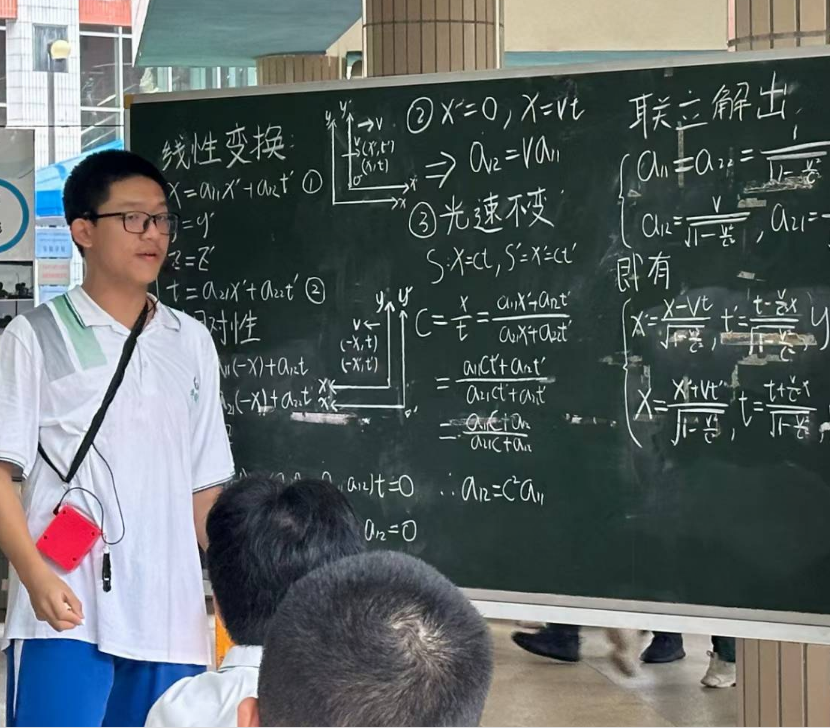

My name is Michael Jia Dong Ho. I am a high school student from China who will be entering my senior year, and I am participating in Harvard’s summer secondary school programs. Physics is my primary academic passion.

This photo shows me hosting a school lecture covering special relativity and Lorentz transformation formulas during the schools open day.
Prior to taking this digital fabrication class, I only absorbed massive theoretical physics knowledge from textbooks. I had almost no experience designing and building physical‑world workpieces by myself. I wanted to step out of purely theoretical learning and try hands‑on manufacturing for the first time. Meanwhile, I hope my self‑made creations can bring practical help to other people.
I am also enrolled in a separate Harvard summer course focused on general relativity. Beyond AP Physics C, I am currently studying advanced physics topics including electrodynamics and modern physics. Physics will be my intended major for college admission, and I plan to pursue research work in this field as my long‑term career.
This digital fabrication course empowers me to design and manufacture physical products independently. It allows me to merge theoretical textbook knowledge with hands‑on maker practice. My final assistive device project targets people living with Parkinson’s disease; it serves as my first real‑world attempt at building a physical prototype that can benefit other communities.
Outside of academics, I enjoy playing soccer and basketball in my spare time. My favorite teams are Bayern Munich and the Houston Rockets, and Amen Thompson is my favorite basketball player.
Jamal Musiala, my favorite football player from Bayern Munich. His creative and physics‑defying gameplay inspires me a lot.
Amen Thompson from the Houston Rockets, my favorite basketball player known for his athletic and versatile style on court.
Throughout this entire summer course, I will document all lab work, safety training sessions, and the full progress of my design projects on this website.